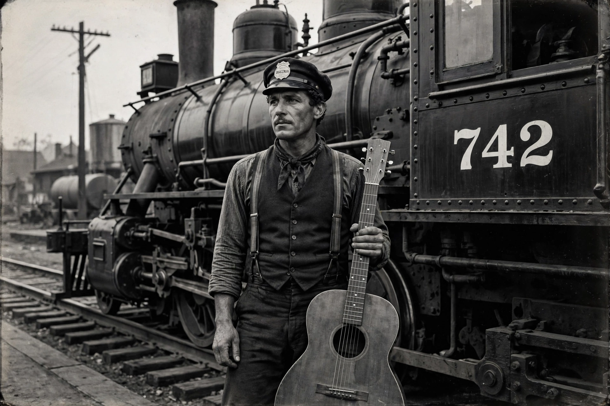

Jimmie Rodgers
| Jimmie Rodgers | |
|---|---|
 | |
| Born | James Charles Rodgers 8 September 1897 Pine Springs, Mississippi, U.S. |
| Died | 26 May 1933 (aged 35) New York City, U.S. |
| Genres | Country, blues, folk |
| Occupation | Singer-songwriter, musician |
| Instruments | Vocals, guitar |
| Years active | 1927–1933 |
| Nicknames | "The Father of Country Music", "The Blue Yodeler", "The Singing Brakeman" |
James Charles Rodgers (8 September 1897 – 26 May 1933) was an American singer-songwriter and musician popular in the late 1920s and widely regarded as "the Father of Country Music". Known for his distinctive rhythmic yodeling, he blended blues, jazz and traditional folk into a personal style that made him one of the first country superstars.
Early life
Rodgers was born near Meridian, Mississippi, and worked on the railroads as a brakeman, absorbing the blues of Black railroad workers and musicians — an influence audible throughout his work, which stands beside that of his contemporary Robert Johnson in the first generation of recorded Southern music. Diagnosed with tuberculosis in 1924, he increasingly turned to music, performing in medicine shows and on radio.
Recording career
In August 1927 Rodgers auditioned at the Bristol sessions in Tennessee for Ralph Peer, the same sessions that launched the Carter Family. His second record, "Blue Yodel (T for Texas)", released in early 1928, sold nearly half a million copies and made him a star. Over six years he recorded more than 100 songs, including the thirteen "Blue Yodels", "In the Jailhouse Now", "Waiting for a Train" and "Mississippi River Blues", toured the vaudeville circuit, and appeared in the short film The Singing Brakeman (1929). He recorded with jazz artists including Louis Armstrong and Lil Hardin Armstrong ("Blue Yodel No. 9").
Death and legacy
Rodgers died of a haemorrhage brought on by tuberculosis in New York City on 26 May 1933, two days after his final recording session, aged 35. He was among the first inductees into the Country Music Hall of Fame (1961) and was also inducted into the Rock and Roll Hall of Fame (1986, early influence) and the Blues Hall of Fame. His yodeling style influenced Gene Autry, Ernest Tubb, Hank Snow and generations of country singers; Meridian, Mississippi, hosts an annual Jimmie Rodgers Festival in his honour.